k-Day 151｜獨庫公路（六）表達
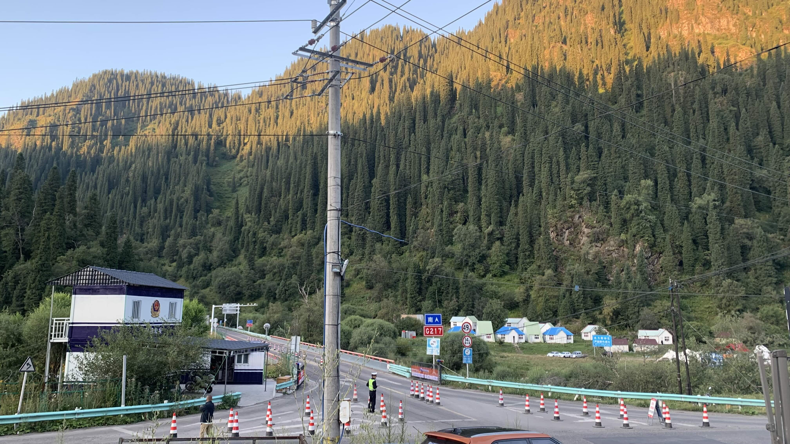
大清早的交警已經開始上班，只知道晚上會分段封路，倒是沒有問過原因。
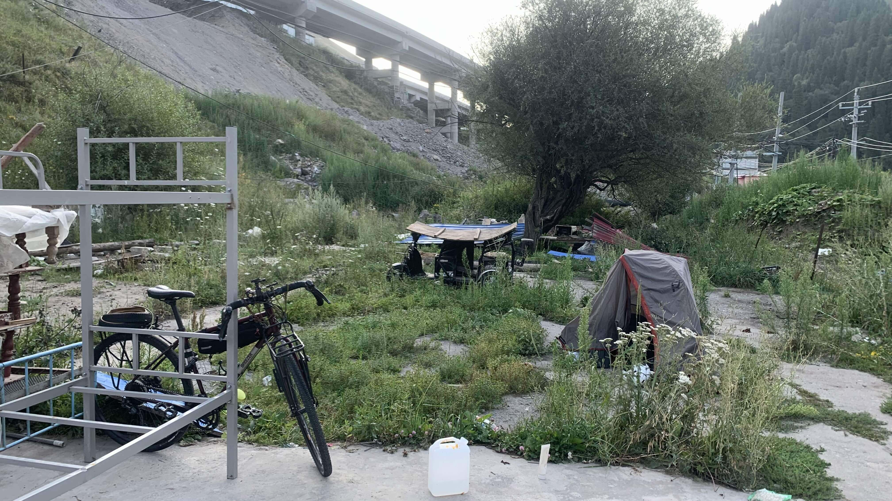
晚上在院子裡睡得很安穩，相當感謝老闆。
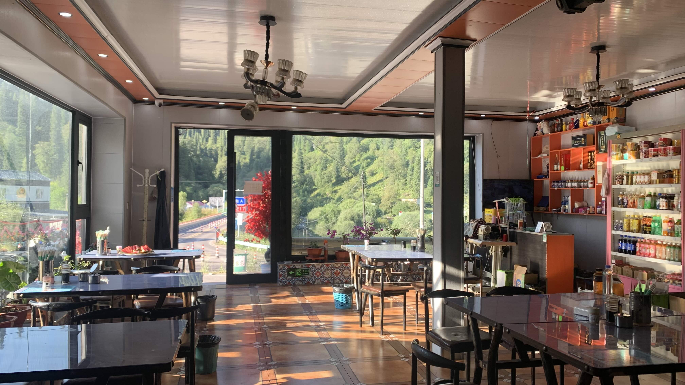
收了行李，到餐廳吃個早餐。昨天的小夥伴們也陸續起床走進餐廳，有的吃飽先走，有的還在睡，雖說是一起抱團，大家都很有自主性。
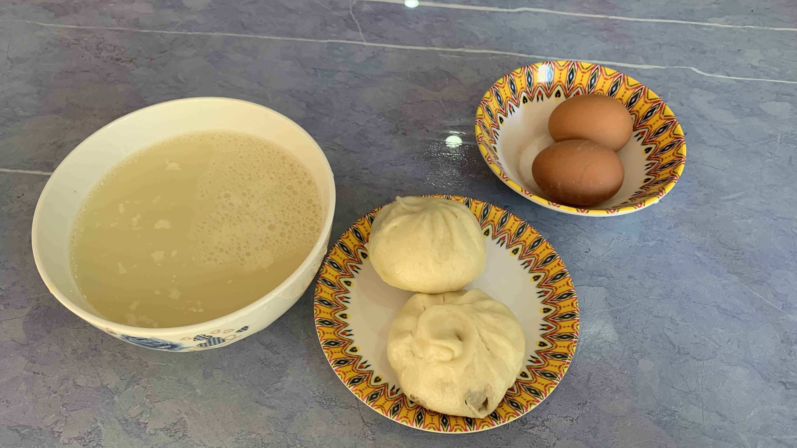
早餐是鹹奶茶、兩個包子和兩顆雞蛋。雞蛋帶在路上吃。
吃飯時來了一團長得像複製人的騎行團體，留著同樣的動漫髮型，目測大學生。這群年輕人坐下後也點了包子雞蛋和奶茶。奶茶一到口邊就聽到一人問：「老闆，有沒有糖？」昨晚幫我們上菜的阿姨轉過身從桌上抓起一和白糖，和周遭的店員老闆交換一個眼神，再轉過來面對客桌前嘴角頗具意味的微笑已經消失了。
不知為何這一幕相當逗趣。在蒙古從來沒見過觀光客要求老闆加白糖，這還是第一次，而老闆和周圍員工則露出顯然一副早知道你要糖的表情。
結帳時問了老闆當地的招呼語，老闆教會我後說：「你可以用手機」應該指的是翻譯軟體，但老闆可能不知道這個詞的中文。
「我想自己學習哎」說完後現學現賣說了一句：「熱喝美特！」
老闆點點頭，問：「你是哪裡來？」
「我是台灣來的。」我說。
「台灣很好，台灣教得很好。」老闆認可地說。
這裡平常來的都是啥樣的客人呢？一句謝謝竟然獲得這麼誇張的反饋。
對著老闆揮揮手說：「霍西」老闆也回：「霍西」
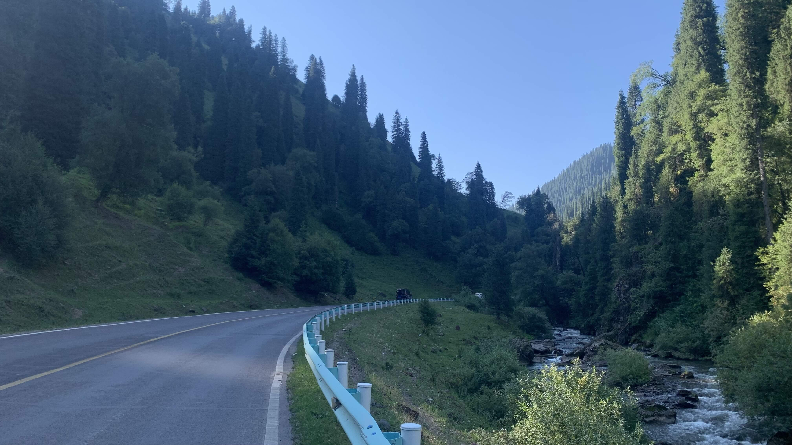
出發後沿著小溪一路往上爬，似乎到處都很適合露營呢。
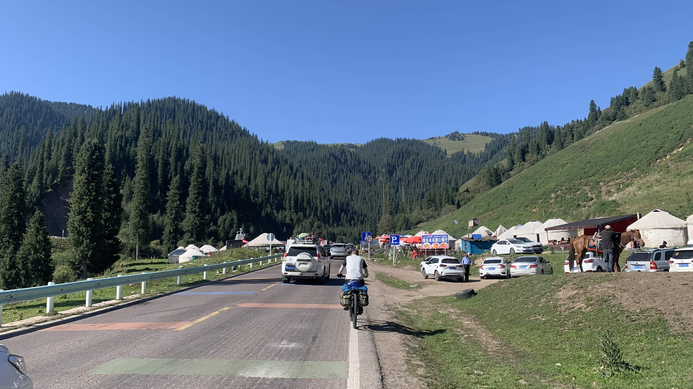
依然是每隔五公里一個休息區，路邊停了許多車輛，很多騎著馬攬客的當地人。定點停下來休息喝水，已經習慣這種早晨爬坡，中午攻頂，下午吹風的行程了。
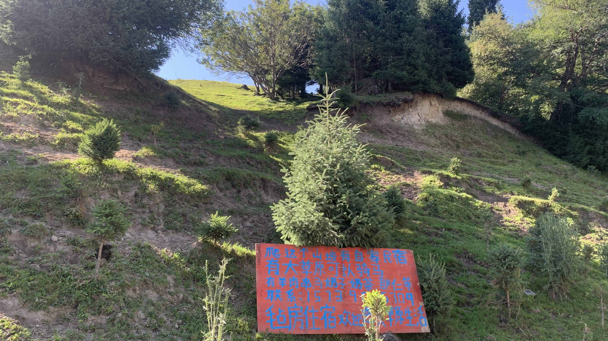
被綠草如茵小河潺潺的景象欺騙了，今天沒有比較輕鬆呢。靠在路邊休息時看到這個路牌
「爬過這個山坡有自家民宿 有大草原可以騎馬 有羊肉串 馬奶子 奶茶 那仁等 氈房住宿 歡迎感受草原生活」這個山坡似乎有點過陡。
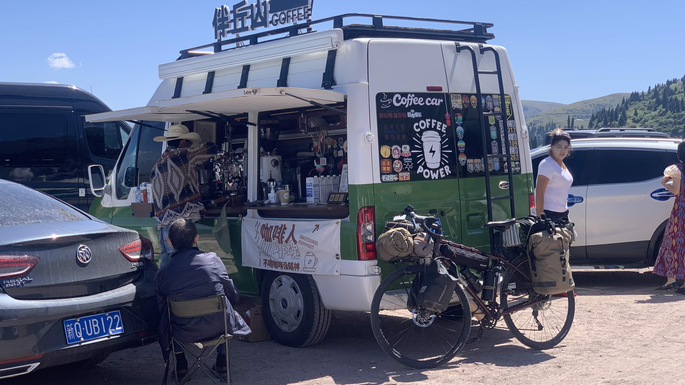
終於又到了一個休息站，從早上就好想喝咖啡，一路上的咖啡車看來都不咋地，眼前這輛車很有那麼一回事。
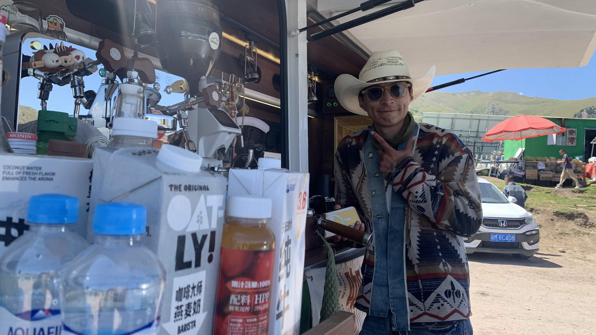
點一杯熱拿鐵，老闆拿了張椅子出來，讓我把二十三號靠在車上。喝了一口咖啡，這可以啊。
和老闆聊著天，決定試著問問：「老闆，你覺得人類的精神是什麼呢？」
「這問題太大了！」老闆想了一陣「這問題太大了，如果是幾年前問我，我可能會說人就是把很多感受匯集起來，透過創造的方式去表達。」
「現在不想用明確的詞去說明它。現在，我覺得就是一種選擇，選擇之後不要後悔，沒有所謂的好與不好。」
我可沒預期到有人會給我這回答，本來要趕的路也不趕了，開始對老闆展開訪談之術。
老闆的年紀和我一樣大，河南人，本科讀的是計算機。做網路後台的工作。二十幾歲時和大家一樣，下班了就聚會、到處玩，直到一次生病，再回到公司，他發現一切都不一樣了。後來當然也做過別的事，不過失敗了。雖然結果看來並不成功，老闆卻覺得因此也獲得許多。咖啡是在四川學的，同樣的豆子交到不同的人手上就會有不一樣的味道。老闆用咖啡表達的自我，我從車子的造型、咖啡的味道和他的話語中明確地接收到了。
倒是老闆有些疑惑，後來又我：「人真的有本我嗎？如果我覺得人都有陰暗面，但是不會把陰暗面示人，那所謂的本我又是怎麼樣的？」
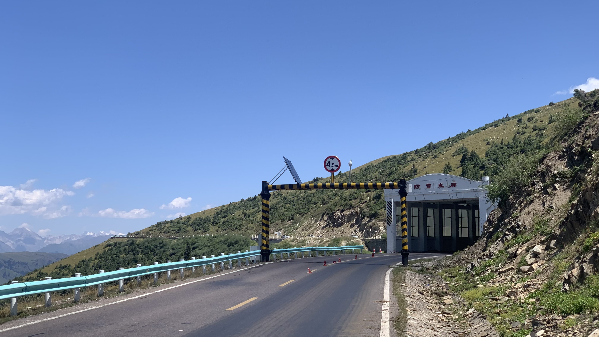
聊了許久，來了新一批客人，和老闆說再見後沒多久就到了隧道口。
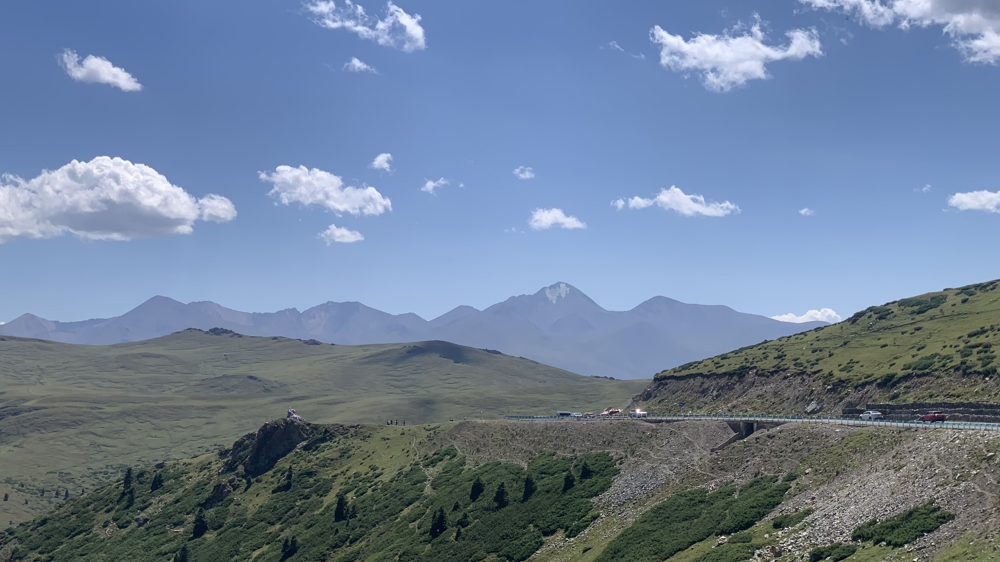
接著是緩緩地下山路。
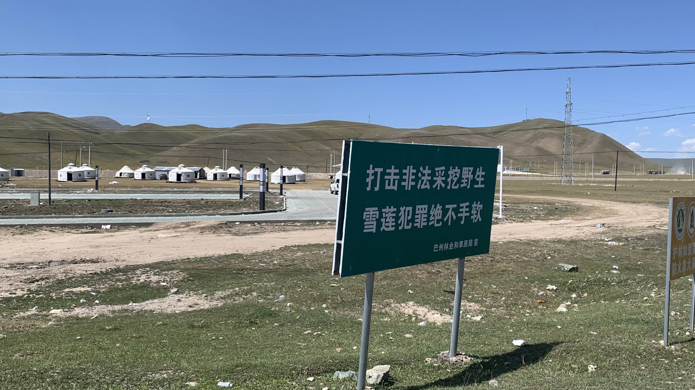
下山後立刻在路邊看到「打擊非法採挖雪蓮」的告示牌，真的有天山雪蓮這物種嗎？
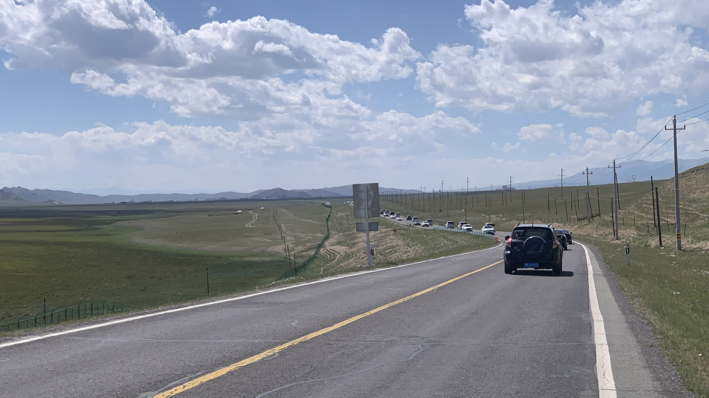
兩邊的草原被鐵網圍著，騎在中間的柏油路上好像自己在金屬管子裡面前進似的，極度不自由。
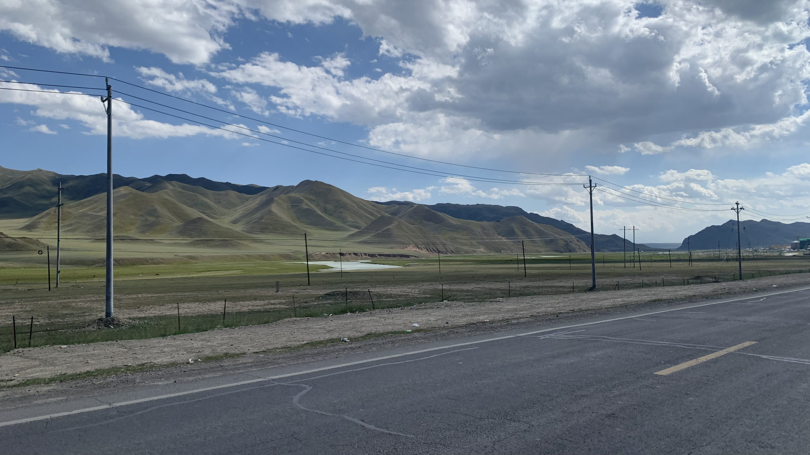
下午抵達巴音布魯克市區，兩邊有不少飯店民宿，似乎是因應觀光興起的聚落。
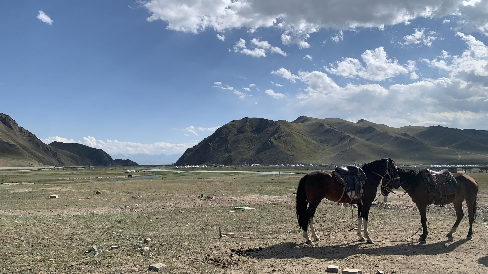
在超商買了麵包泡麵和飲水，往景區方向走。不知為啥有兩匹馬被綁在原地。景區員工看到我，走過來和我說自行車不能進入草原區，必須自駕或搭車。
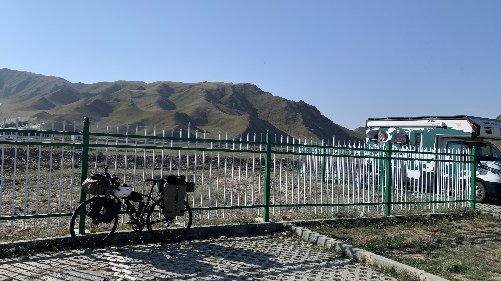
那就在鐵欄外露營吧。
晚上十點多一名男子大聲嘶吼著唱歌，歌詞內容約莫是他要向天借五百年。很巧的是早上才跟咖啡店老闆說到：「你覺得對中國人來說，有什麼比死更重要的事嗎？」老闆和我說，現在大多數人還只是在生存階段，比如活著這部電影，絕大多數的中國人就是在各種困境裡掙扎，沒辦法要求他們去談精神，「但是這幾年已經進步很多了」他最後補上這一句。
這就讓我想起上週跟我分享杭亭頓的老闆弟弟，記得他問我：「你既然走了這一路，應該發現中國的路上最多的就是藥局。」當時我聽了哈哈大笑，確實是這樣沒有錯。雖然覺得不適合把討論內容寫得太仔細，主要還是不了解這裡的族群宗教問題，擔心給他添麻煩，但是我們聊的許多內容，在這幾天不時會回想思考。
第一次到金閣寺，我看到裡面的工作人員拿著一隻小鏟，一塊一塊地削著石頭和石頭之間的青苔。既不是整片剷除，也不是任由它生長，而是削成與周遭的石頭相應的樣貌。這個場景使我相當震撼，甚至相信這座庭園也許幾百年以前就是長這樣，那些松樹的樹枝，幾百年來也就維持著這樣。甚至在這個幾代人維護的場所裡，只有精神，沒有時間。既然沒有時間，也就沒有幾百年以前，也沒有幾百年以後。
據說中國有個傳統，一個人有巨大的志願，需要比人類生命還長的時間才能完成，因此才會一直尋求長生不死。但是什麼樣的巨大志願只有一個人才能完成呢？金閣寺的工作人員會為了永恆地削下石縫間長出的青苔而求上天賜與他永生嗎？不會的吧，死了一後下一代人會繼續傳承這份精神的。反過來說，握著麥克風在天山上嘶吼著要向天借五百年的這位兄弟，如果再給他五百年，他會想做些什麼，成為什麼樣的人呢？繼續在山上嘶吼著要求再多借五百年嗎？
今日花費：水＋飲料 14、早餐 18、咖啡 30、電話費 1.1元